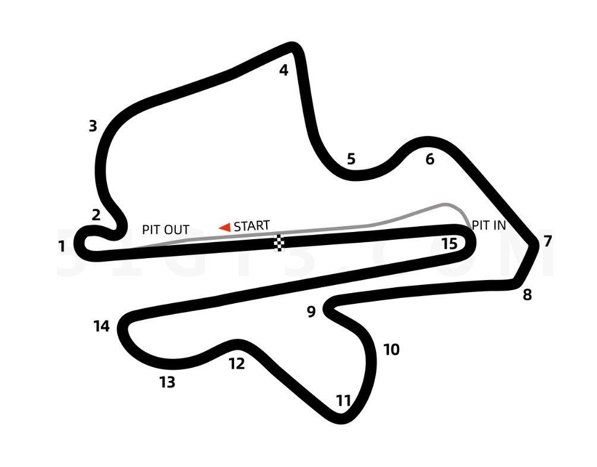
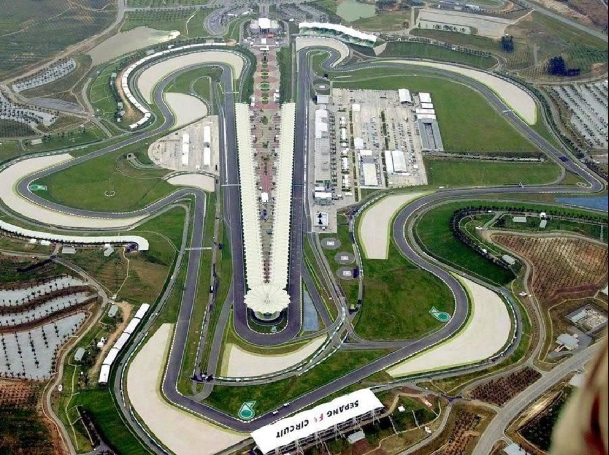
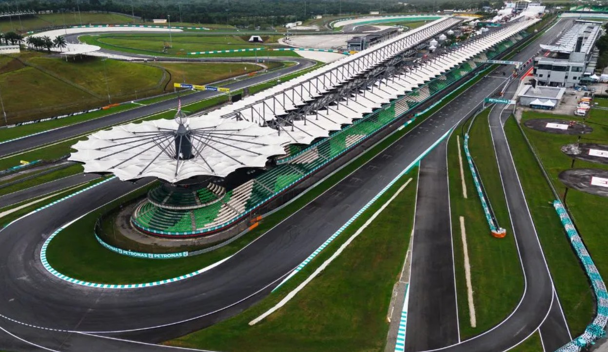

Nombre: Petronas Sepang International Circuit
Logitud: 5543
Anchura media: 19
Fecha del Gran Premio en 2025: 2025-10-26
Hora de comienzo del Gran Premio: 12:40:00
Numero de vueltas: 20
Localidad más próxima al circuito: Kuala Lumpur
País: Malasia
Patrocinador del Gran Premio: Petronas



Vencedor: Álex Márquez - tiempo empleado: 0:40:9.249
Clasificación general después de la carrera: